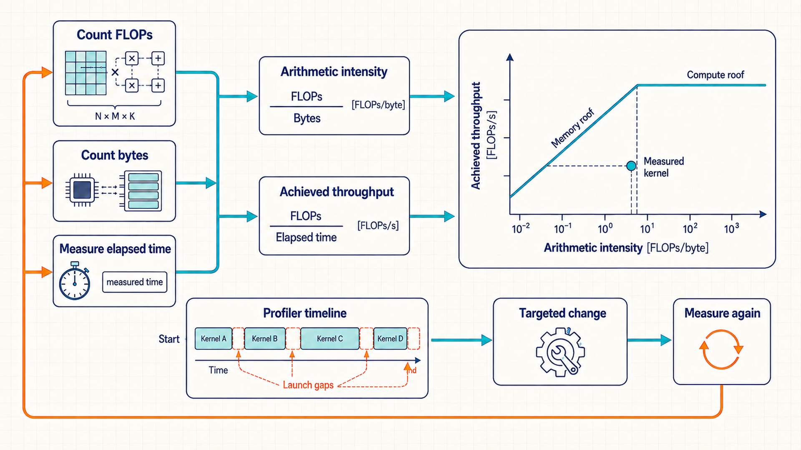
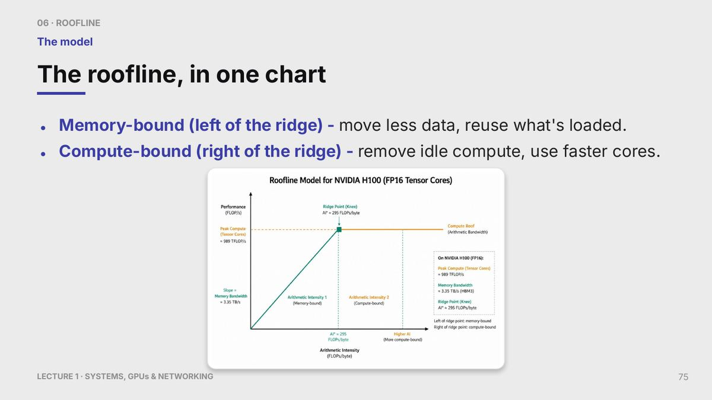

5 Performance Models and Profiling
Provide quantitative roofline modeling and systematic profiling workflows.
Performance debugging follows a causal chain: count work, bytes, and elapsed time; classify the likely constraint; construct a roofline bound; then verify the hypothesis in a trace. The sections below introduce those steps in that order.
Roofline reasoning supplies a plausibility model, while profiling supplies evidence about the gap between that model and the real execution. The gap can come from launch overhead, synchronization, communication, cache effects, or an incorrect workload model.
The profiling workflow should start broad and then zoom in. PyTorch Profiler identifies expensive operations and memory pressure. Nsight Systems shows CPU/GPU timelines, launch gaps, and collectives. Nsight Compute diagnoses one kernel in detail.
Roofline reasoning separates tensor-core-heavy training projections from optimizer or activation movement that transfers many bytes per operation. In decode, the same analysis explains why one-token projections can resemble matrix-vector multiplication and become sensitive to memory bandwidth.
Floating-point operation count, bytes moved, and elapsed time place a measured region against memory-bandwidth and compute ceilings.

A point below a roof shows unused headroom but does not identify the cause by itself. The profiler timeline separately exposes launch gaps and other idle periods. A useful experiment changes one control that matches the measured symptom, then repeats the same measurement and correctness checks.
5.1 Quantities and formulas
Performance models compare measured work, elapsed time, and data movement. The core quantities are floating-point operations, bytes moved through the memory level being modeled, arithmetic intensity, and achieved throughput. These quantities are defined first because both the roofline model and profiler results depend on them.
Arithmetic intensity is the amount of arithmetic performed per byte moved. It is written as:
\[ \text{AI} = \frac{\text{FLOPs}}{\text{bytes moved}} \tag{5.1}\]
The numerator and denominator must describe the same measured region and memory boundary. The definitions below make those counting choices explicit.
- AI: Arithmetic intensity, measured in FLOPs per byte. Higher AI means more arithmetic is performed for each byte moved.
- FLOPs: Floating-point operations performed by the kernel or phase. The count must match the operation being timed.
- bytes moved: Estimated traffic through the memory level being modeled, usually HBM for a first roofline pass. If the byte estimate ignores cache reuse or temporary buffers, the roofline conclusion can be wrong.
For example, 2e12 FLOPs and 1e12 bytes gives AI = 2 FLOPs/byte. The formula is useful because it forces an explicit byte estimate, but it omits cache effects, compression, metadata traffic, and hidden workspace movement.
| Workload fragment | First byte-count estimate | What the estimate misses |
|---|---|---|
| Vector read and write | Read n elements and write n elements: about 2 x n x dtype_bytes | Cache reuse, write allocation policy, alignment, and vectorized transaction granularity. |
| GEMV y = Ax | Read M x N matrix values, read N vector values, and write M outputs | Repeated vector reuse from cache, partial sums in registers, batching, and fused epilogues. |
| GEMM C = AB | Read A and B and write C as a lower bound | Tiling can reuse A and B many times from on-chip storage, while poor tiling can add extra movement. |
| Naive attention scores | Materializing scores costs batch x heads x sequence x sequence x dtype_bytes for the score tensor alone | Masks, softmax temporaries, dropout, and whether an IO-aware kernel avoids the score tensor entirely. |
| KV-cache decode read | Read cached K and V for active tokens, layers, KV heads, head dimension, and dtype | Paged-cache metadata, cache locality, GQA/MQA head sharing, quantized cache formats, and batching policy. |
Achieved throughput is computed from the measured runtime:
\[ \text{achieved throughput} = \frac{\text{FLOPs}}{\text{seconds}} \tag{5.2}\]
This quotient is valid only when the operation count and elapsed time cover the same work. Its three terms therefore need to be reported together.
- FLOPs: The same operation count used in the roofline estimate.
- seconds: Measured elapsed time for the same region. Include launch, synchronization, and communication only if those costs are part of the question.
- throughput: Measured work rate, usually reported as TFLOP/s for deep learning kernels.
If the same 2e12-FLOP kernel runs in 0.020 seconds, achieved throughput is 100 TFLOP/s. This number is a measurement, not a hardware property. It becomes misleading when warmup, compilation, or unrelated synchronization is included accidentally.
A roofline estimate compares the compute ceiling with the bandwidth ceiling:
\[ \text{roofline bound} = \min(\text{peak compute}, \text{AI} \times \text{peak bandwidth}) \tag{5.3}\]
The ridge point is the arithmetic intensity where the bandwidth ceiling reaches the compute ceiling:
\[ \text{AI}_{\text{ridge}} = \frac{\text{peak compute}}{\text{peak memory bandwidth}} \tag{5.4}\]
The two ceilings must refer to the selected dtype, operation path, and memory tier. These terms determine which side of the ridge point the workload occupies.
- peak compute: Best plausible arithmetic throughput for the selected precision, GPU generation, and kernel path. FP16, BF16, TF32, FP8, and integer formats have different ceilings.
- peak bandwidth: Relevant memory bandwidth for the modeled path. HBM bandwidth is not the same as NVLink, PCIe, or network bandwidth.
- AI times peak bandwidth: The bandwidth ceiling expressed as FLOP/s. It says how much compute can be sustained if every byte must be supplied at that bandwidth.
- ridge point: Arithmetic intensity at which the bandwidth ceiling and compute ceiling meet. Left of the ridge, bandwidth is the first-order limit; right of the ridge, compute throughput is the first-order limit.
If AI = 2 FLOPs/byte and bandwidth is 3 TB/s, the memory ceiling is 6 TFLOP/s, so a 200 TFLOP/s compute peak does not matter for that kernel until reuse improves. The roofline omits scheduler overhead, launch overhead, synchronization, imperfect occupancy, dynamic shapes, and distributed communication.
5.2 Limits on kernel performance
A workload is memory-bound when runtime is dominated by moving bytes, compute-bound when runtime is dominated by arithmetic throughput, launch-bound when fixed CPU/GPU dispatch overhead dominates small GPU work, and communication-bound when movement across devices or ranks sits on the critical path.
These categories are diagnostic, not labels for whole applications. One training step can contain compute-bound GEMMs, memory-bound optimizer updates, launch-bound small operations, and communication-bound gradient synchronization. The right optimization depends on the region being measured.
Use the following four labels for the measured region. Each label names the dominant cost and points to the first change worth testing:
- Memory-bound: Runtime follows bytes moved. Key-value cache reads during decode are a common example; test locality, precision, coalescing, and cache layout.
- Compute-bound: Runtime follows arithmetic throughput. Large dense projections are a common example; test Tensor Core use, dimension alignment, and useful batch size.
- Launch-bound: GPU work is short and CPU or dispatch gaps dominate. Many small eager operations are a common example; test fusion, compilation, or CUDA Graph replay.
- Communication-bound: Collectives dominate the timeline. Distributed gradient synchronization is a common example; test overlap, sharding, rank placement, and topology.
These four labels apply to a measured region, and each points to a different first experiment rather than a permanent property of the model. The next question is how arithmetic intensity and hardware ceilings place that region on a quantitative compute-versus-memory bound.
5.3 Roofline analysis
A roofline derivation turns a measured or estimated kernel into a ceiling comparison. The input is FLOPs, bytes moved, elapsed time, peak compute, and memory bandwidth. The output is a first-order explanation of whether the kernel is plausibly limited by memory traffic or arithmetic throughput.
5.3.1 Constructing the model
The roofline chart places achieved throughput against arithmetic intensity on a log-log scale. Its diagonal memory-bandwidth ceiling and horizontal compute ceiling meet at the ridge point, which separates the first-order bandwidth-limited and compute-limited regions.
- FLOPs: Floating-point operations performed by the kernel or operation being modeled. Counting them requires knowing the algorithm and tensor shape together.
- Bytes moved: Data read from and written to the relevant memory level. For a simple roofline this usually means HBM traffic, but a cache-aware analysis may distinguish L2, shared memory, or host-device transfer.
- Elapsed time: Measured runtime for the same region whose FLOPs and bytes are being counted.
- Achieved throughput: FLOPs divided by elapsed time. It is the realized compute rate, not the device peak.
- Arithmetic intensity: FLOPs divided by bytes moved. It determines where the point sits on the roofline x-axis.
The roofline chart plots a kernel’s arithmetic intensity against achieved performance and overlays hardware ceilings. It is a diagnostic chart: the point’s position tells whether the first-order limit is memory bandwidth, compute throughput, or an inconsistency in the model inputs.
The roofline model connects measured performance to hardware limits. It separates memory-bandwidth limits from compute-throughput limits.

The printed ceilings are an H100 FP16 theoretical-peak example. In the first-order model, points left of the ridge are bounded by the memory roof and points right of it by the compute roof; a point below either roof still requires profiling before choosing a kernel, precision, or hardware change.
Chart note
Measured or compared: Achieved performance compared with hardware memory-bandwidth and compute-throughput ceilings.
Axes, units, and series: The horizontal axis is arithmetic intensity in FLOPs per byte. The vertical axis is performance or throughput. The diagonal series is the memory-bandwidth ceiling; the flat series is the peak-compute ceiling; the ridge marks where the active ceiling changes.
Read for: Read left of the ridge as memory-bandwidth-limited and right of the ridge as compute-throughput-limited. A measured point far below the roof suggests locality, launch, synchronization, or counting problems.
Source status: Exact source chart screenshot. The generator does not extract or redraw the plotted values; surrounding equations provide separate worked numbers for reading the chart.
For a kernel with known FLOPs and estimated bytes moved, the arithmetic intensity places the kernel on the horizontal axis of the roofline chart. The achieved throughput places it on the vertical axis. Low arithmetic intensity means the bandwidth ceiling is low. High arithmetic intensity can move the kernel toward the compute ceiling. The ridge point is the diagnostic boundary: to the left, reduce bytes or increase reuse; to the right, improve arithmetic throughput, tensor-core utilization, or useful batch shape.
The derivation is deliberately approximate. If the measured point appears above the roofline, the FLOP count, byte estimate, measurement window, or peak numbers are inconsistent. That inconsistency is useful because it forces the engineer to refine the model before choosing an optimization.
Roofline limit
Peak compute and peak HBM bandwidth define an upper bound. Real kernels can sit below it because of instruction mix, occupancy limits, shared-memory bank conflicts, register spilling, Tensor Core alignment, synchronization, launch overhead, cache misses, or incomplete overlap. Use profiler evidence to explain the gap below the bound.
A point below the roofline shows unused headroom but does not identify whether launch gaps, occupancy, synchronization, or cache behavior caused it. The next question is whether a worked set of FLOPs, bytes, and elapsed time is internally consistent before an optimization is selected.
5.3.2 Worked roofline interpretation
A worked roofline pass starts by counting FLOPs, estimating bytes moved, and measuring runtime. Suppose a kernel performs 2 trillion FLOPs, moves 1 terabyte, and runs for 20 milliseconds. The arithmetic intensity is 2 FLOPs per byte, and the achieved throughput is 100 TFLOP/s.
\[ \text{AI} = \frac{2 \times 10^{12} \text{ FLOPs}}{10^{12} \text{ bytes}} = 2 \text{ FLOPs/byte} \tag{5.5}\]
\[ \text{achieved throughput} = \frac{2 \times 10^{12} \text{ FLOPs}}{0.020 \text{ s}} = 100 \text{ TFLOP/s} \tag{5.6}\]
If the GPU peak bandwidth is 3 TB/s, the bandwidth ceiling at this intensity is 6 TFLOP/s, which would contradict the measured 100 TFLOP/s. That contradiction means the byte estimate is wrong, the FLOP estimate is wrong, or the kernel is reusing data much more effectively than the rough model assumed. This is exactly why the derivation is useful: it exposes which assumption needs refinement.
Worked calculation - roofline diagnosis
Measured inputs: Count 2e12 FLOPs, estimate 1e12 bytes for the same measured region, and record 0.020 seconds. Use a 3 TB/s peak-bandwidth estimate for the target GPU.
Arithmetic intensity: 2e12 / 1e12 = 2 FLOPs per byte.
Achieved throughput: 2e12 / 0.020 s = 100 TFLOP/s.
First-order ceiling: 2 FLOPs/byte x 3 TB/s = 6 TFLOP/s. The measured 100 TFLOP/s is above that ceiling, so the byte estimate, FLOP count, timing region, or assumed memory level must be wrong.
Next measurement: Check profiler bytes, cache reuse, operation count, and timing boundaries before selecting a kernel change.
In LLM inference, this is why prefill and decode should not be tuned with one mental model. Large prefill projections are GEMM-like and can move toward the compute side of the roofline. Small-batch decode is often GEMV-like, repeatedly reading weights and key-value cache for few new tokens, so it tends to remain left of the ridge and bandwidth-sensitive unless batching or fusion changes the shape.
5.4 Profiling workflow
Profiling is the primary method for verifying performance hypotheses and identifying the execution bottlenecks of deep learning models. Before resorting to low-level profiling tools like Nsight, performance engineers should use the built-in PyTorch Profiler to trace framework activities, memory allocations, and CPU-to-GPU execution timelines:
Example: PyTorch profiler pass. This profiling template measures CPU and CUDA activity for one warmed-up function. It is useful for finding expensive operators, memory allocation spikes, and whether time is on the CPU side or GPU side.
Code example: PyTorch profiler pass
# What this code shows:
# - Warmup avoids mixing initialization or compilation with steady-state timing.
# - cuda_time_total identifies GPU kernels and operations that dominate device time.
# - profile_memory=True helps connect bottlenecks to allocation and tensor size.
# - If CPU time dominates, kernel optimization alone may not help.
#
import torch
from torch.profiler import profile, ProfilerActivity
device = torch.device("cuda", 0)
args = (torch.randn(1024, 1024, device=device),)
def fn(x):
return torch.relu(x @ x)
for _ in range(5):
fn(*args) # warmup
with profile(
activities=[ProfilerActivity.CPU, ProfilerActivity.CUDA],
record_shapes=True,
profile_memory=True,
) as prof:
fn(*args)
print(prof.key_averages().table(sort_by="cuda_time_total", row_limit=20))This template runs several warmup iterations to initialize the PyTorch CUDA allocator and warm up the kernels before capturing execution. In the profile block, PyTorch logs operations, tensor shapes, and memory changes. The resulting printout sorts operations by CUDA execution time. Inspecting this table helps identify whether execution is dominated by slow GPU kernels, CPU-to-GPU memory copies, or allocator overhead.
5.4.1 Profiler selection
Different profilers answer different questions. Start with the cheapest tool that can disprove the current guess, then move to lower-level tools only when more detail is needed.
- Python profilers:
cProfiledeterministically records Python function calls and their timings, whilepy-spyperiodically samples a running Python process with low intrusion. Both are useful for tokenization, request formatting, Python scheduling, and data-loader work, but they collect evidence differently. - Event or tracing profiler: Records timed events and relationships. PyTorch Profiler links framework operations to CPU time, CUDA kernels, memory, and shapes. Nsight Systems records a system timeline with CUDA launches, kernels, memory copies, NVTX ranges, and collectives.
- Kernel profiler: Inspects one GPU kernel in detail. Nsight Compute (NCU) reports occupancy, memory transactions, instruction mix, tensor-core usage, achieved bandwidth, and stall reasons.
- Trace viewer: Perfetto or Chrome trace viewing helps inspect exported timelines interactively, especially repeated decode steps and CPU/GPU gaps.
Profiling adds overhead. It can change timing, perturb scheduling, and force extra synchronization. Treat profiled runs as diagnostic evidence, not final benchmark numbers. Once the bottleneck is identified, measure a clean steady-state run without heavy profiling instrumentation.
- Compute-bound trace: Long GPU kernels with high arithmetic utilization, little idle gap, and evidence of tensor-core or math throughput limits.
- Memory-bound trace: Runtime tracks bytes moved; kernels show high memory throughput but lower arithmetic utilization, often visible in decode or KV-cache-heavy paths.
- Synchronization-bound trace: CUDA synchronizations, blocking copies, or collectives create wait regions where useful GPU work cannot proceed.
- Transfer-bound trace: Host-to-device, device-to-host, or device-to-device copies occupy visible timeline spans and block the hot path.
- CPU/data-bound trace: GPU sits idle while the host handles tokenization, data loading, JSON parsing, sampling, or scheduler bookkeeping.
- Launch-bound trace: Many tiny kernels are separated by CPU launch gaps; fusion,
torch.compile, or CUDA Graphs may help if shapes and control flow are stable.
The first profiler should be the least expensive tool that can disprove the current bottleneck guess, and its instrumented timing should not be reported as clean benchmark performance. After selecting the tool, the next question is how one costly framework operation maps to the specific GPU kernel, copy, or host wait that produced its time.
5.4.2 From framework operation to kernel
A profiler must observe the layer where the suspected delay is created. Framework operations, system scheduling, individual kernel behavior, serving queues, and distributed transports require different evidence even when they appear in one end-to-end request.
The escalation path below starts with the application vocabulary and moves downward only when the current evidence isolates a narrower question.
| Question layer | Primary evidence | What it can establish | Next escalation |
|---|---|---|---|
| PyTorch operation | PyTorch Profiler | Expensive operations, dimensions, memory events, and the CPU/CUDA time split | Nsight Systems when timeline ordering is unclear |
| CPU/GPU timeline | Nsight Systems with NVTX ranges | Launch gaps, copies, synchronization, kernel order, and collective spans | Nsight Compute after one kernel is isolated |
| GPU kernel | Nsight Compute | Occupancy, transactions, cache sectors, instruction mix, tensor-core use, and stalls | Source or kernel rewrite guided by measured counters |
| Exported framework trace | Perfetto | Interactive inspection of repeated steps, ranges, and CPU/GPU gaps | Return to the profiler that records missing events |
NVTX ranges supply application context to timeline tools. Label phases such as tokenization, prefill, decode, sampling, cache management, and communication so a kernel sequence can be connected to the request or training step that launched it.
Serving-engine metrics are developed in Chapter 10 because queueing and cache pressure belong to the serving control plane. NCCL logs and distributed traces are developed in Chapter 12 because transport selection depends on ranks and topology.
5.4.3 Profiler symptoms
A profiler result is evidence from a trace or kernel report that points toward a bottleneck. It is not a final answer by itself. The same visible pattern can have several causes, so the useful workflow is to connect the result to the layer that produced it, then confirm with a second measurement.
- GPU gaps between kernels: The device timeline has idle spaces between short kernels. Common causes are CPU launch overhead, Python scheduling, implicit synchronization, data-dependent control flow, or a serving scheduler that cannot feed work fast enough. Confirm with Nsight Systems or a PyTorch Profiler timeline before rewriting kernels.
- High memory throughput with low math utilization: The kernel is likely memory-bound. The next question is which bytes dominate: HBM reads, cache misses, uncoalesced global loads, key-value cache reads, or host-device copies.
- Low occupancy: Too few warps are resident on each Streaming Multiprocessor (SM), or the kernel is limited by registers, shared memory, block size, or launch shape. Low occupancy is not always a bug; some kernels are intentionally limited by another resource.
- Many tiny kernels: The workload may be launch-bound or suffering from graph fragmentation. First check whether fusion,
torch.compile, or CUDA Graph replay can remove repeated host-side overhead. - Long memory-copy spans: The trace is spending time moving data rather than computing. Distinguish CPU-to-GPU transfer, GPU-to-CPU transfer, peer-to-peer GPU transfer, and network transfer because each has a different fix.
- High cache-sector traffic: Nsight Compute may show that a kernel requests many L1 or L2 sectors for little useful payload. This usually points to poor coalescing, scattered strides, low spatial locality, or streaming data that is too large to reuse from cache. If sectors per request look reasonable but hit rate is still poor, check reuse distance, working-set size, and possible conflict patterns from stride or layout. Read counters by level: L1/TEX symptoms suggest per-SM access-pattern issues; L2 misses to device memory suggest HBM traffic; L2 misses to peer or system memory suggest remote or mapped-memory paths.
- Long collective spans: A distributed step may be communication-bound. Check whether ranks arrive late, whether NCCL used the expected fabric, and whether overlap with backward or layer computation is actually hiding the collective.
- Allocator spikes: Repeated allocation or fragmentation can appear as CPU overhead, device synchronization, or memory-pressure stalls. Reuse buffers, stabilize shapes, or inspect PyTorch allocator statistics before assuming the math kernel is slow.
Once a trace isolates one slow kernel, Nsight Compute separates its throughput ceiling, memory behavior, warp scheduling, launch shape, and source-level instruction cost. The table groups the report views by the question they answer.
| Nsight Compute view | What it answers | Example metric family to inspect |
|---|---|---|
| Speed of Light / SOL | How close the kernel is to compute and memory ceilings. | SM throughput, DRAM throughput, achieved occupancy, and roofline-like utilization summaries. |
| Memory Workload Analysis | Which memory level and transaction pattern dominate. | L1/TEX sectors, L2 hit rate, DRAM bytes, sector counts, and shared-memory table entries. |
| Scheduler and warp state | Why warps were not issuing instructions. | Warp stall reasons such as memory dependency, barrier, not selected, or execution dependency. |
| Launch statistics | Whether launch shape and resources limit parallelism. | Grid/block dimensions, registers per thread, shared memory per block, theoretical occupancy. |
| Source counters | Which source lines or instructions create the traffic. | PC sampling, instruction mix, tensor-core instructions, local-memory loads/stores from spills. |
Read profiler output as a map of hypotheses. A PyTorch table can say which operator is expensive, Nsight Systems can show whether the GPU is idle or communicating, and Nsight Compute can explain one kernel’s memory transactions and occupancy. Jumping directly from one table row to a rewrite is a common source of wasted optimization work.
5.4.4 End-to-end profiling case
The following case keeps one performance question intact from workload record to measured intervention. It uses a small decode workload so the reader can see how prompt shape, tokenization, model execution, cache state, and timing evidence connect without treating one kernel metric as the whole diagnosis.
Worked case - remove a decode launch gap
Workload record: Fix 32 requests, 512-token prompts, 64 generated tokens, one model revision, one GPU, and the same sampling settings. Record prompt and output token counts before timing.
Input and state: Tokenization produces the fixed prompt IDs. Prefill builds the initial KV cache; decode then appends one token per active request and reads the existing cache.
Evidence: A PyTorch timeline shows many short decode kernels separated by CPU gaps, while Nsight Compute shows the isolated kernels are not close to the memory or compute ceiling.
Intervention: Warm up the shape family, capture the stable decode region with CUDA Graphs, and keep request admission and variable-length control outside the captured region.
Measurement: Repeat the same workload without profiler instrumentation. Compare TPOT, p95 latency, GPU idle time, and output correctness; report compile and capture time separately from steady-state decode.
Conclusion: The improvement belongs to launch/control overhead, not to the arithmetic kernel. If the gap remains, inspect CPU scheduling, batching, or cache-management work next.
5.5 Runtime API probes
A runtime API probe is a small code fragment that asks one narrow question about the execution layer. The notebooks use probes like these to check device capability, dtype footprint, GPU timing, trace export, and compiler graph breaks before applying larger optimizations.
Read the probes as a dependency chain: first confirm the device and dtype facts, then time the GPU work correctly, then collect a trace, and only then diagnose compiler graph breaks. Skipping that order often leads to fixing code before proving which layer is actually limiting the workload.
Example: Device capability and dtype footprint. This probe shows that torch.cuda owns device visibility and basic CUDA runtime facts, while a tensor’s dtype determines its byte footprint. It is useful before interpreting roofline numbers or deciding whether a precision format is realistic on the current GPU.
Code example: Device capability and dtype footprint
# What this code shows:
# - get_device_capability is a hardware probe, not a guarantee that every desired kernel path is
# enabled.
# - element_size connects dtype to memory traffic: one million BF16 values occupy about two
# megabytes before allocator overhead.
#
import torch
device = torch.device("cuda", 0)
print(torch.cuda.get_device_name(device))
print(torch.cuda.get_device_capability(device))
x = torch.empty(1_000_000, dtype=torch.bfloat16, device=device)
bytes_per_element = x.element_size()
footprint_bytes = x.numel() * bytes_per_element
print(bytes_per_element, "bytes per element")
print(footprint_bytes, "total bytes")Example: CUDA event timing. This probe measures elapsed time on the CUDA stream rather than trusting an unsynchronized CPU timer. It places allocation and warmup outside the measured region so the timing better reflects steady GPU work.
Code example: CUDA event timing
# What this code shows:
# - CUDA launches are asynchronous from the CPU side, so CPU wall-clock timing can accidentally
# measure queueing rather than device execution.
# - Events measure work between markers on a stream; they still need synchronization before
# reading elapsed time.
#
import torch
device = torch.device("cuda", 0)
x = torch.randn(4096, 4096, device=device, dtype=torch.float16)
w = torch.randn(4096, 4096, device=device, dtype=torch.float16)
for _ in range(5):
_ = x @ w
torch.cuda.synchronize()
start = torch.cuda.Event(enable_timing=True)
end = torch.cuda.Event(enable_timing=True)
start.record()
y = x @ w
end.record()
torch.cuda.synchronize()
print(start.elapsed_time(end), "ms")Example: Profiler trace export. This probe connects PyTorch-level operations to CPU time, CUDA time, tensor shapes, and a timeline trace. The model and input IDs come from the decode experiment; the important point is that torch.profiler produces both an operator summary and a browser-inspectable trace.
Code example: Profiler trace export
# What this code shows:
# - The table answers which PyTorch operations dominate; the exported trace helps inspect gaps,
# copies, launch bursts, and repeated decode-step structure.
# - Profiler output identifies the next question; end-to-end latency or throughput determines
# whether the workload improved.
#
import torch
from torch.profiler import profile, ProfilerActivity
model.eval()
with torch.inference_mode():
with profile(
activities=[ProfilerActivity.CPU, ProfilerActivity.CUDA],
record_shapes=True,
profile_memory=True,
) as prof:
_ = model(input_ids=input_ids, use_cache=True)
print(prof.key_averages().table(sort_by="cuda_time_total", row_limit=20))
prof.export_chrome_trace("decode_trace.json")Example: Graph-break diagnosis. This probe uses TorchDynamo diagnostics to show why a Python function cannot remain one compiled graph. The scalar .item() forces a host-side value and creates data-dependent Python control flow, so the compiler must break the graph.
Code example: Graph-break diagnosis
# What this code shows:
# - This tool diagnoses compiler behavior. Confirm any resulting change with steady-state workload
# measurements.
# - The usual fix is to express the branch with tensor operations or keep the compiled region away
# from scalar Python decisions.
#
import torch
from torch import _dynamo as dynamo
def bad_step(x):
if x.sum().item() > 0:
return x * 2
return x - 2
report = dynamo.explain(bad_step)(torch.ones(8, device="cuda"))
print(report)These probes deliberately stay small. A probe should answer one layer question, then the engineer can decide whether the next step belongs to CUDA timing, graph capture, profiler inspection, serving-engine metrics, or distributed communication.
The profiler now separates kernel limits from host-side launch gaps and repeated framework work. Chapter 6 uses that evidence to decide when graph compilation, generated kernels, CUDA Graph replay, or ordinary eager execution is the appropriate local runtime path.